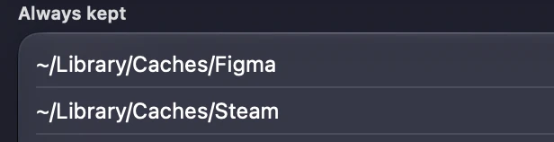

Everything

else stays.Lightly really deletes files, by itself. So most of its code is about what it refuses to do.
Cleaning is permanent and needs no confirmation.
Only app leftovers pass through the Trash first. Read what it cleans before you install. The software comes with no warranty.
Would Lightly touch it?
Type any path from your Mac and read the rule that applies.
One door for every deletion
Every file Lightly removes goes through a single piece of code, DeletionGateway. It refuses in five ways, and whatever it refuses stays on disk. The one exception is Docker, which cleans up after itself with its own prune command.
A link
Symbolic links are refused, so a link cannot lead a clean somewhere else.
Another disk
Anything off your startup disk is skipped, even when a folder is redirected there.
Outside its folders
A short list of folders inside your Library, and nowhere else.
On the deny list
Your personal folders, along with any parent folder that would take them with it.
On your keep list
Whatever you add to Always kept, and everything inside it.
It never touches
- Documents,
- Desktop,
- Downloads,
- Pictures,
- Movies,
- Music,
- Mail,
- Messages,
- iCloud Drive,
- keychains,
- Safari,
- Chrome,
- Firefox,
- Brave,
- Edge,
- Arc,
- Opera,
- app containers,
- system folders,
- external drives.
See it before it cleans
Build from source and you get a dry run, which lists what a clean would remove and deletes nothing. The app only deletes when it was built with --live.
The list lands in ~/Library/Application Support/com.maccleaner.app/dry-run.txt.
git clone https://github.com/jsonrls/lightly
cd lightly
scripts/bundle.sh
"dist/Lightly.app/Contents/MacOS/MacCleaner" --dry-run-reportWhen in doubt, it keeps
Each of these is a rule in the code, and each one errs on the side of leaving your files alone.
Nothing at first launch
The first clean waits one full interval, an hour by default.
Open apps are skipped
A running app keeps its cache, however big it is.
Unreadable means in use
If a folder cannot be read, it counts as recently used and stays.
A damaged state pauses it
If its settings file cannot be read, Lightly starts paused and cleans nothing.
No admin password
It never asks for one, so it cannot reach system folders.
Dusty cannot delete
The assistant has no tools. It only rewords what was measured.
Your list wins
Always kept beats every rule in the app. Add a folder once, and no clean will enter it.

Every run is on record
The history shows what each clean freed, so nothing happens out of sight.